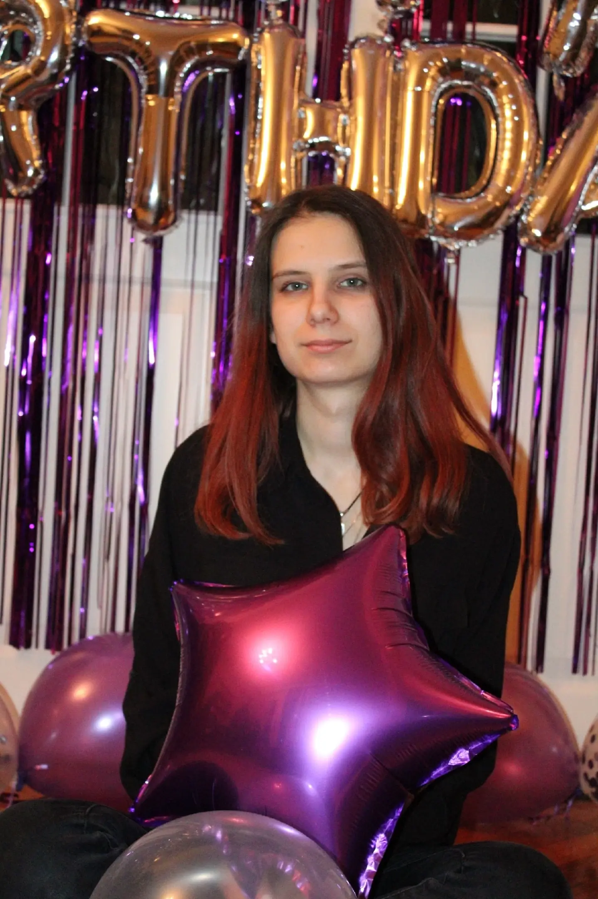
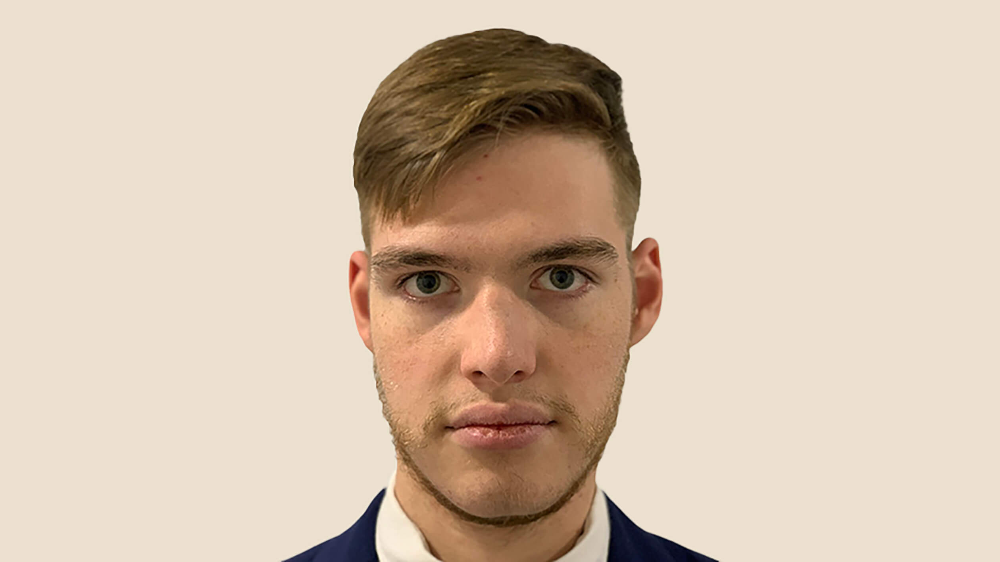
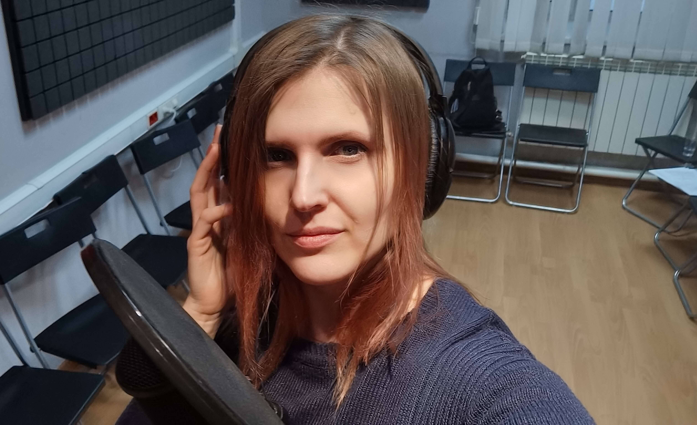
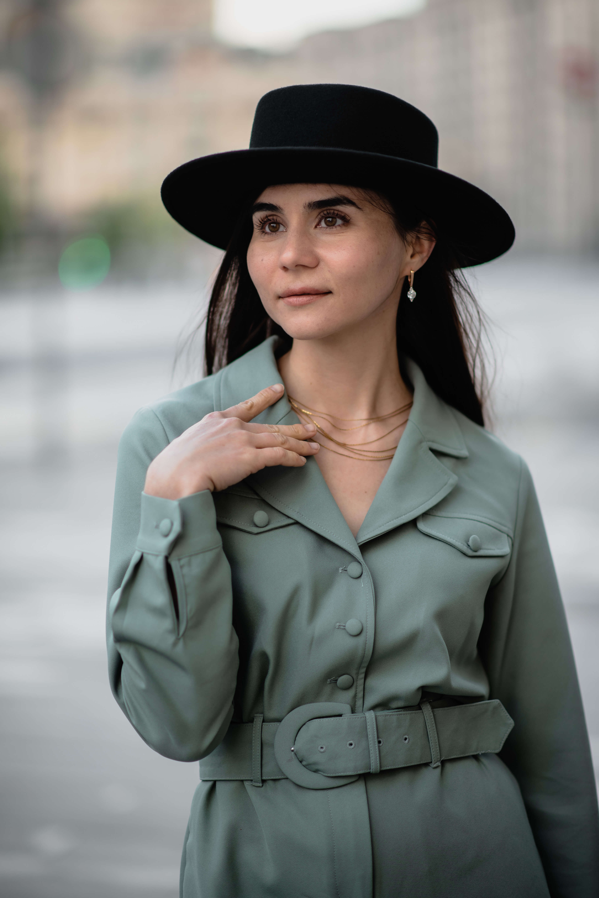

Студия Voice4You
Студия V4Y - это творческое объединение актёров дубляжа и не только. Прежде всего, каждый участник объединения обладает набором уникальных талантов и способностей для реализации самых смелых замыслов не только в озвучании, но и в реализации различных творческих проектов.
V4Y - это просторная студия с профессиональным оборудованием и отличным оснащением, которая может работать в круглосуточном режиме. На базе студии реализован музыкальный проект и в наличии весь набор высококлассных инструментов и опытных музыкантов.
Мы можем не только качественно озвучить тот или иной материал, но создать его сами. Музыка, песни, сценарии рекламных роликов и мероприятий, медийные проекты - нам всё по плечу! Разноплановость по возрастному составу, опыту, образованию и навыкам позволяет нам решать многие задачи.
Ценообразование в нашей работе отличается от остальных - оплата не почасовая, а за результат. Мы открыты к любому продуктивному сотрудничеству.
Актёры




